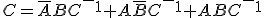

7. Sumadores
Un sumador es un circuito que realiza la suma de dos palabras binarias. Es distinta de la operación OR, con la que no nos debemos confundir. La operación suma de números binarios tiene la misma mecánica que la de números decimales.
Por lo que en la suma de números binarios con dos o más bits, puede ocurrir el mismo caso que podemos encontrar en la suma de números decimales con varias cifras: cuando al sumar los dos primeros dígitos se obtiene una cantidad mayor de 9, se da como resultado el dígito de menor peso y “me llevo" el anterior a la siguiente columna, para sumarlo allí.
En la suma binaria de los dígitos 1 + 1, el resultado es 0 y me llevo 1, que debo sumar en la columna siguiente y pudiéndose escribir 10, solamente cuando sea la última columna a sumar. A este bit más significativo de la operación de sumar, se le conoce en inglés como carry (acarreo), equivalente al “me llevo una” de la suma decimal.
Semisumador. Es un dispositivo capaz de sumar dos bits y dar como resultado la suma de ambos y el acarreo. La tabla de verdad correspondiente a esta operación sería:
| Entradas | Salidas |
||
| A |
B | C | S |
| 0 | 0 | 0 | 0 |
| 0 |
1 | 0 | 1 |
| 1 | 0 | 0 | 1 |
| 1 | 1 | 1 | 0 |
Con lo que sus funciones canónicas serán:
Que una vez implementado con puertas lógicas, un semisumador tendría el circuito:
 |
| Imagen 20. Elaboración propia |
Sumador completo. Presenta tres entradas, dos correspondientes a los dos bits que se van a sumar y una tercera con el acarreo de la suma anterior. Y tiene dos salidas, el resultado de la suma y el acarreo producido. Su tabla de verdad será:
|
Entradas |
Salidas | |||
| A | B |
C-1 | C | S |
| 0 | 0 | 0 | 0 | 0 |
| 0 | 0 | 1 |
0 | 1 |
| 0 | 1 | 0 | 0 | 1 |
| 0 | 1 | 1 | 1 | 0 |
| 1 | 0 | 0 | 0 | 1 |
| 1 | 0 | 1 | 1 | 0 |
| 1 | 1 | 0 | 1 | 0 |
| 1 | 1 | 1 | 1 | 0 |
Sus funciones canónicas serán:


Que una vez simplificadas quedarían:

O bien:

Una vez implementado con puertas lógicas el sumador presentaría cualquiera de los siguientes circuitos:
 |
|
| Imagen 21. Elaboración propia | Imagen 22. Elaboración propia |
Aunque, como ya hemos dicho en otros casos, en realidad estos circuitos no se cablean con puertas lógicas, si no que forman parte de circuitos integrados como el CI 7483, que es un sumador de cuatro bits.
| Imagen 23. Elaboración propia |
El esquema
 |
| Imagen 24. Elaboración propia |
El esquema mostrado en la figura es el conexionado interno que presenta dicho sumador de 4 bits, configurado dentro del CI 7483.
| Imagen 25. alldatasheet. © |
Características del sumador de 4 bits 7483:
Es un sumador completo que ejecuta la suma de dos números binarios de cuatro bits. Hay salida de suma por cada bit y el acarreo resultante (C4), se obtiene del cuarto bit.
Está diseñado para velocidades medias-altas de funcionamiento, con bits múltiples de suma en paralelo y acarreo en serie.
- Tensión de alimentación.......................4,5V a 5,25V.
- Temperatura de funcionamiento.............0 a 70ºC.
- Cargabilidad de salida normalizada C4......5 U.L.
- Cargabilidad de las salidas de suma.........10 U.L.
- Tensión de entrada alta mínima..............2V.
- Tensión de entrada de alta
máxima.........0,8V.
Para sumar números de más de un bit, también se recurre al conexionado de sumadores binarios en paralelo, donde el acarreo de la suma de dos dígitos será una entrada a sumar en el paso siguiente. En este caso se precisan tantos semisumadores como bits tengamos que sumar. El montaje de la figura posterior tiene un funcionamiento idéntico al del CI 7483, aunque presenta incompatibilidades a nivel de pines.
 |
| Imagen 26. Elaboración propia |